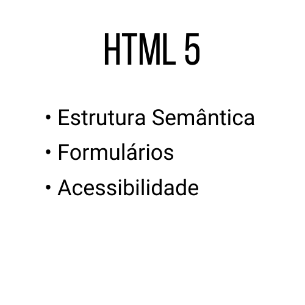

Sobre Mim
Olá,
Meu nome é Davi Bonifácio, sou natural de Brasília, atualmente residindo em João Pessoa. Em minha breve trajetória profissional, participei de diversos projetos na área de tecnologia, com foco predominante no desenvolvimento front-end, onde sinto-me mais à vontade para aplicar meu talento. Navegando pelo meu portfólio, você poderá explorar alguns dos trabalhos e projetos nos quais estive envolvido.
Se estiver em busca de um parceiro para um projeto web empolgante ou desejar discutir como posso contribuir, não hesite em entrar em contato. Estou à disposição para colaborar.
1993
Nascido em Brasília
2009
Residio para João Pessoa
2012
Certificou-se como Técnico em Operador de Informática
2021
Formou-se em Ciências da Computação pelo Centro Universitário de João Pessoa.
2022
Criou sua própria startup, chamada Nomuh, Usando Técnicas de Machine Learning
2023
Atuando como Freelancer, Criando Sites Estáticos para Empresas e Associações
Olá,
Meu nome é Davi Bonifácio, sou natural de Brasília, atualmente residindo em João Pessoa. Em minha breve trajetória profissional, participei de diversos projetos na área de tecnologia, com foco predominante no desenvolvimento front-end, onde sinto-me mais à vontade para aplicar meu talento. Navegando pelo meu portfólio, você poderá explorar alguns dos trabalhos e projetos nos quais estive envolvido.
Se estiver em busca de um parceiro para um projeto web empolgante ou desejar discutir como posso contribuir, não hesite em entrar em contato. Estou à disposição para colaborar.
1993
Nascido em Brasília
2009
Residio para João Pessoa
2012
Certificou-se como Técnico em Operador de Informática
2021
Formou-se em Ciências da Computação pelo Centro Universitário de João Pessoa.
2022
Criou sua própria startup, chamada Nomuh, Usando Técnicas de Machine Learning
2023
Atuando como Freelancer, Criando Sites Estáticos para Empresas e Associações


Experiências
- Nome: Davi Bonifácio
- Idade: 30 anos
- Formação: Ciências da Computação
- Ramo: Dev Front-End de interfaces web
- Nomuh | Junho de 2021
- Sócio fundador da empresa
- Desenvolvedor front-end do site
- Representante comercial
- Associação A4PB | Agosto de 2023
- Desenvolvedor do website
- Edição de vídeo
- Animated logo maker
- Estágio Supervisionado - Unipê | Fevereiro de 2021
- Criacão de conteúdos educativos de computação para as redes sociais
- Realização de testes de peças computacionais
- Montagem de computadores
Tecnologias





Projetos
Projeto Real (Ativo)
Nesse projeto, fui contratado para desenvolver todo o site da Associação A4PB, incluindo um design atraente, criação de páginas funcionais e responsivas para os usuários
Projeto Real (Ativo)
O projeto Ecossistema de Inovação foi o maior desafio da minha curta carreira profissional. Fui encarregado de criar 4 telas integradas aos painéis do Qlik Sense, extraindo manualmente os dados via JavaScript. Por questões de confidencialidade, o repositório e o site não estarão disponíveis, mas há imagens demonstrando seu funcionamento no botão "visitar"
Projeto Real (Concluído)
O projeto Nomuh marcou minha estreia como empreendedor e meu primeiro projeto concreto. Tratava-se de um sistema web de busca por medicamentos filtrando suas restrições alérgicas. O site, embora já desativado, deixou um legado de vídeos e fotos demonstrando seu funcionamento e impacto
Projeto Portfólio (ativo)
No âmbito deste projeto, o objetivo era conceber um site de portfólio destinado a potenciais clientes. O site foi projetado para destacar habilidades, experiências e conquistas, proporcionando uma apresentação impactante.
Contatos
Número:
(83) 99955-4197
Email:
davibonni.designweb@gmail.com